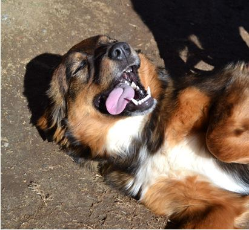

“Next time, she’s dead!”
What would you do if you heard someone say that regarding your dog? That scary sentiment was expressed to Jennifer’s owners when she, a one-year old Border Collie blend, and her mother, innocently found their way out of their rural home’s yard.
Jennifer and her mom lived in a rural neighborhood in Arizona. Jennifer was a good-natured dog, happy and full of love for people and other dogs. Jennifer was scarcely older than a puppy and, naturally, like any young dog, had a lot of energy to burn. Her human family wasn’t the most attentive, so when they were away or their attention was turned elsewhere, Jennifer and her mom were left to entertain and fend for themselves.
Jennifer Finds a Forever Family
As soon as Jennifer was made ready to find a home, her personality blossomed into a happy-go-lucky girl! We discovered she enjoyed belly-rubs and sunning herself in the warm San Diego sunshine. She was such a charming pup, she found her forever family after only being available for a scant, few hours! You go, girl!